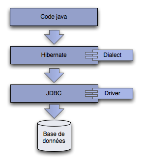

Hibernate est un framework de persitence objet - base de données relationnelles (ORM).
Il implémente et étend JPA (Java Persitance API), le standard de persistence jee.
Techniquement, c'est une surcouche des drivers JDBC (Java DataBase Connectivity).
Configuration hibernate
Nous allons écrire un test unitaire afin de mettre en place notre couche de persistance.
En premier, on ajoute la librairie hibernate et le driver derby.
<dependency> <groupId>org.hibernate</groupId> <artifactId>hibernate-core</artifactId> <version>4.2.5.Final</version> <scope>compile</scope> </dependency> <dependency> <groupId>org.apache.derby</groupId> <artifactId>derby</artifactId> <version>10.10.1.1</version> <scope>compile</scope> </dependency>
Derby est une base de données embarquées qui va permettre d'écrire facilement des tests.
Nous créons un test HibernateTest dans le package fr.todooz.hibernate.
@Test
public void createSessionFactory() {
Configuration configuration = new Configuration();
configuration.setProperty("hibernate.dialect", "org.hibernate.dialect.DerbyTenFiveDialect");
configuration.setProperty("hibernate.connection.url", "jdbc:derby:target/testdb;create=true");
configuration.setProperty("hibernate.connection.driver_class", "org.apache.derby.jdbc.EmbeddedDriver");
configuration.setProperty("hibernate.hbm2ddl.auto", "create-drop");
ServiceRegistry serviceRegistry = new ServiceRegistryBuilder()
.applySettings(configuration.getProperties()).buildServiceRegistry();
SessionFactory sessionFactory = configuration.buildSessionFactory(serviceRegistry);
}
La SessionFactory est ce qui permet d'obtenir des connexions avec la base de données.
Le guide complet de la configuration de hibernate
Ce test génère pas mal de traces dans la console au démarrage d'hibernate.
Les classes du domaine
Nous souhaitons sauver des Tasks, il faut donc configurer cette classe pour hibernate.
La façon la plus simple est de le faire via des annotations dans nos classes du domaine.
On ajoute les annotations @Entity, @Table, @Column.
@Entity
@Table(name = "task")
public class Task {
@Column
private Date createdAt = new Date();
@Column
private String title;
@Column(length = 4000, nullable = true)
private String text;
@Column
private Date date;
@Column(nullable = true)
private String tags;
...
}
Il est aussi possible de tout configurer (hibernate et objets du domaine) via fichiers xml mais cela est beaucoup plus verbeux.
Il ne reste qu'à informer hibernate de la présence de notre bean annoté.
configuration.addAnnotatedClass(Task.class);
Une exécution en l'état nous indique que :
org.hibernate.AnnotationException: No identifier specified for entity: fr.todooz.domain.Task at org.hibernate.cfg.InheritanceState.determineDefaultAccessType(InheritanceState.java:268) at org.hibernate.cfg.InheritanceState.getElementsToProcess(InheritanceState.java:223) at org.hibernate.cfg.AnnotationBinder.bindClass(AnnotationBinder.java:686) at org.hibernate.cfg.Configuration$MetadataSourceQueue.processAnnotatedClassesQueue(Configuration.java:4035) at org.hibernate.cfg.Configuration$MetadataSourceQueue.processMetadata(Configuration.java:3989) at org.hibernate.cfg.Configuration.secondPassCompile(Configuration.java:1398) at org.hibernate.cfg.Configuration.buildSessionFactory(Configuration.java:1856) at fr.todooz.hibernate.HibernateTest.createSessionFactory(HibernateTest.java:23) at sun.reflect.NativeMethodAccessorImpl.invoke0(Native Method) at sun.reflect.NativeMethodAccessorImpl.invoke(NativeMethodAccessorImpl.java:39) at sun.reflect.DelegatingMethodAccessorImpl.invoke(DelegatingMethodAccessorImpl.java:25) at java.lang.reflect.Method.invoke(Method.java:597) at org.junit.runners.model.FrameworkMethod$1.runReflectiveCall(FrameworkMethod.java:44) at org.junit.internal.runners.model.ReflectiveCallable.run(ReflectiveCallable.java:15) at org.junit.runners.model.FrameworkMethod.invokeExplosively(FrameworkMethod.java:41) at org.junit.internal.runners.statements.InvokeMethod.evaluate(InvokeMethod.java:20) at org.junit.runners.BlockJUnit4ClassRunner.runNotIgnored(BlockJUnit4ClassRunner.java:79) at org.junit.runners.BlockJUnit4ClassRunner.runChild(BlockJUnit4ClassRunner.java:71) at org.junit.runners.BlockJUnit4ClassRunner.runChild(BlockJUnit4ClassRunner.java:49) at org.junit.runners.ParentRunner$3.run(ParentRunner.java:193) at org.junit.runners.ParentRunner$1.schedule(ParentRunner.java:52) at org.junit.runners.ParentRunner.runChildren(ParentRunner.java:191) at org.junit.runners.ParentRunner.access$000(ParentRunner.java:42) at org.junit.runners.ParentRunner$2.evaluate(ParentRunner.java:184) at org.junit.runners.ParentRunner.run(ParentRunner.java:236) at org.eclipse.jdt.internal.junit4.runner.JUnit4TestReference.run(JUnit4TestReference.java:49) at org.eclipse.jdt.internal.junit.runner.TestExecution.run(TestExecution.java:38) at org.eclipse.jdt.internal.junit.runner.RemoteTestRunner.runTests(RemoteTestRunner.java:467) at org.eclipse.jdt.internal.junit.runner.RemoteTestRunner.runTests(RemoteTestRunner.java:683) at org.eclipse.jdt.internal.junit.runner.RemoteTestRunner.run(RemoteTestRunner.java:390) at org.eclipse.jdt.internal.junit.runner.RemoteTestRunner.main(RemoteTestRunner.java:197)
Pour corriger cette erreur, il suffit de rajouter un identifiant unique dans chaque classe.
@Id
@GeneratedValue(strategy = GenerationType.AUTO)
private Long id;
public Long getId() {
return id;
}
public void setId(Long id) {
this.id = id;
}
Cet identifiant servira de clé primaire dans la base de données.
Il utilise une stratégie de génération automatique : hibernate demandera à la base de générer des identifiants quand il en aura besoin.
Désormais, ce test unitaire passe.
Persister un objet
Afin de voir ce que peut faire hibernate, nous allons persister une Task. On ajoute le test suivant.
@Test
public void saveTask() {
Task task = new Task();
task.setDate(new Date());
task.setTitle("Read Effective Java");
task.setText("Read Effective Java before it's too late");
task.setTags("java,java");
Session session = sessionFactory.openSession();
Transaction transaction = session.beginTransaction();
session.save(task);
transaction.commit();
session.close();
}
Afin de pouvoir écrire ce test il faut avoir passé le test précédent (createSessionFactory) en @Before (exécuté avant chaque test unitaire) au lieu de @Test.
On passe également la variable sessionFactory en attribut de classe afin qu'elle soit accessible depuis les tests.
Hibernate nous permet donc de sauver un objet dans une table sans que nous ayons à manipuler de SQL.
Il manque un peu de gestion d'erreur mais pour des tests, cela est suffisant.
Afin de laisser la base dans un bon état après chaque test, on ajoute la méthode @After suivante.
@After
public void cleanDb() {
Session session = sessionFactory.openSession();
Transaction transaction = session.beginTransaction();
session.createQuery("delete from Task").executeUpdate();
transaction.commit();
session.close();
sessionFactory.close();
}
Cette opération de delete est dite "bulk" (en masse) car elle affecte un nombre inconnu, à priori, d'entités.
Rechercher un objet
Rechercher un objet dans la base se fait tout aussi simplement que la persistence.
Pour les requêtes, hibernate utilise un language proche du SQL : le HQL (Hibernate Query Language).
Le HQL permet de travailler avec le nom des classes java au lieu du nom des colonnes en base.
@Test
public void findTask() {
saveTask();
Session session = sessionFactory.openSession();
Query query = session.createQuery("from Task where title = :title");
query.setString("title", "Read Effective Java");
List<Task> tasks = query.list();
session.close();
Assert.assertEquals(1, tasks.size());
Assert.assertEquals("Read Effective Java", tasks.get(0).getTitle());
}
Hibernate se charge donc de convertir nos requêtes et nos objets afin que nous n'ayons pas de SQL a faire.
En plus du HQL, il existe une autre API encore plus orientée objet : la Criteria API
@Test
public void findTaskWithCriteria() {
saveTask();
Session session = sessionFactory.openSession();
Criteria criteria = session.createCriteria(Task.class);
criteria.add(Restrictions.eq("title", "Read Effective Java"));
List<Task> tasks = criteria.list();
session.close();
Assert.assertEquals(1, tasks.size());
Assert.assertEquals("Read Effective Java", tasks.get(0).getTitle());
}
Ces 2 APIs sont disponibles en fonction du besoin.
TaskService
Nous avons maintenant suffisamment d'élements afin d'écrire notre service de gestion de tâches.
Les opérations à supporter sont :
- save(task) : persister une tâche en base
- delete(id) : supprimer un tâche
- findAll() : la liste complète des tâches
- findByQuery(String query) : recherche de tâches
- count() : le nombre total de tâches en base
On pourra rajouter d'autres méthodes plus tard.
On crée donc la classe TaskService dans fr.todooz.service.
public class TaskService {
public void save(Task task) {
// TODO
}
public void delete(Long id) {
// TODO
}
public List<Task> findAll() {
// TODO
return null;
}
public List<Task> findByQuery(String query) {
// TODO
return null;
}
public int count() {
// TODO
return 0;
}
}
Afin d'implémenter ces méthodes, nous allons passer par des tests unitaires.
public class TaskServiceTest {
private SessionFactory sessionFactory;
@Before
public void createSessionFactory() {
Configuration configuration = new Configuration();
configuration.setProperty("hibernate.dialect", "org.hibernate.dialect.DerbyTenFiveDialect");
configuration.setProperty("hibernate.connection.url", "jdbc:derby:target/testdb;create=true");
configuration.setProperty("hibernate.connection.driver_class", "org.apache.derby.jdbc.EmbeddedDriver");
configuration.setProperty("hibernate.hbm2ddl.auto", "create-drop");
configuration.addAnnotatedClass(Task.class);
ServiceRegistry serviceRegistry = new ServiceRegistryBuilder()
.applySettings(configuration.getProperties()).buildServiceRegistry();
sessionFactory = configuration.buildSessionFactory(serviceRegistry);
}
@After
public void cleanDb() {
Session session = sessionFactory.openSession();
Transaction transaction = session.beginTransaction();
session.createQuery("delete from Task").executeUpdate();
transaction.commit();
session.close();
sessionFactory.close();
}
@Test
public void save() {
}
private Task task() {
Task task = new Task();
task.setDate(new Date());
task.setTitle("Read Effective Java");
task.setText("Read Effective Java before it's too late");
task.setTags("java,java");
return task;
}
}
Et nous commençons par la méthode save. Nous souhaiterions pouvoir écrire :
@Test
public void save() {
TaskService taskService = new TaskService();
taskService.setSessionFactory(sessionFactory);
taskService.save(task());
}
Faites en sorte que cela soit possible et que ce test passe en prenant soin d'utiliser une transaction et de bien fermer la session.
Le delete (doc hibernate).
@Test
public void delete() {
TaskService taskService = new TaskService();
taskService.setSessionFactory(sessionFactory);
Task task = task();
taskService.save(task);
taskService.delete(task.getId());
Session session = sessionFactory.openSession();
Assert.assertEquals(0, session.createQuery("from Task").list().size());
session.close();
}
Les find avec la criteria API
@Test
public void findAll() {
TaskService taskService = new TaskService();
taskService.setSessionFactory(sessionFactory);
taskService.save(task());
taskService.save(task());
Assert.assertEquals(2, taskService.findAll().size());
}
@Test
public void findByQuery() {
TaskService taskService = new TaskService();
taskService.setSessionFactory(sessionFactory);
taskService.save(task());
taskService.save(task());
Assert.assertEquals(2, taskService.findByQuery("read").size());
Assert.assertEquals(2, taskService.findByQuery("java").size());
Assert.assertEquals(0, taskService.findByQuery("driven").size());
}
Et le count
@Test
public void count() {
TaskService taskService = new TaskService();
taskService.setSessionFactory(sessionFactory);
taskService.save(task());
taskService.save(task());
Assert.assertEquals(2, taskService.count());
}
Après ce test, notre service est donc suffisament opérationnel pour le moment.
Cependant, nous avons un peu de duplication de code dans nos tests unitaires et le code reste assez verbeux.
Sans casser les tests, il serait possible de grandement simplifier ce code.
Les limites
Tout ce que nous avons écrit aurait été très verbeux en SQL.
Hibernate est une aide précieuse lorsque l'on travaille avec des objets et une base de données relationelle.
Il ne faut pas se tromper non plus, le mapping base de données - objet est un sujet complexe.
Mais notre code a encore quelques limitations :
- Gestion des ouvertures et fermetures de sessions à la main.
- Gestion des transactions à la main.
- Il faut fournir la SessionFactory au service.
- Nous n'utilisons pas de pool de connexion sérieux (hibernate fournit un pool par défaut suffisant pour les tests).
- La mise en place de la SessionFactory n'est pas facilement factorisable.
Avant de coder un second service, nous allons essayer de régler tous ces problèmes.